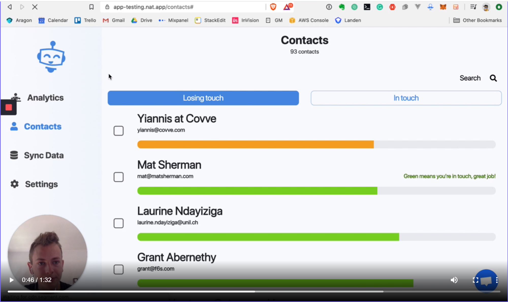
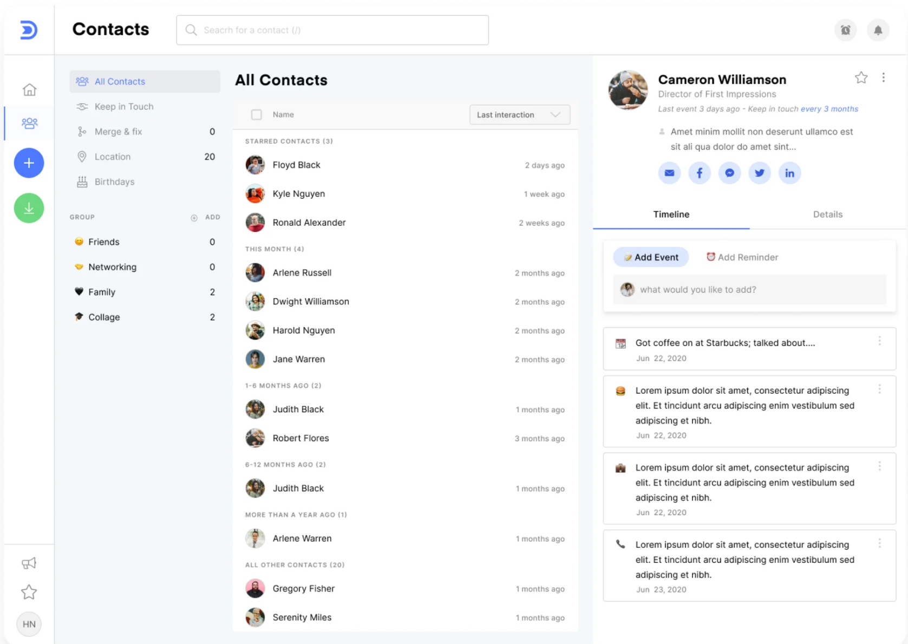
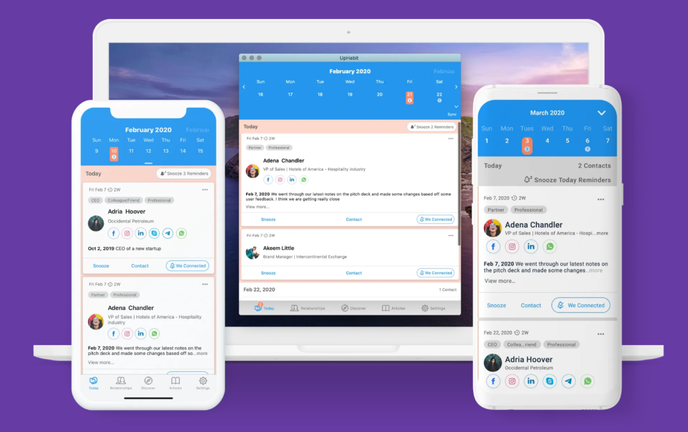

CRM software, or Customer Relationship Management software, has been a key part of the business world for decades. If you already knew this, though, you might be wondering why there’s such a thing as a “personal” CRM - after all, who has customers in their personal life?
However, if you’re the kind of person who ends up giving gift cards for birthdays because you always forget them until the last second, then this personal relationship manager software is exactly what you need.
CRM software for business is designed to help with storing customer information, managing communications, and nurturing leads. While you (hopefully!) don’t need software to hold information about people you want to convince to be your friend, personal CRM software often has the other useful features of a professional CRM solution.
Personal CRM software is, quite simply, a combination of a calendar, notebook, address book, and smart reminder tools in a single bit of kit. It helps you to remember birthdays and other events, as well as other things that are important to your relationship with the people in your life.
Personal CRM software is fantastic if you’re a forgetful person, or you’ve got a lot of relationships that you want to keep track of. You might think that using software to remind you about your friends and family feels disingenuous, but you couldn’t be further from the truth.
Personal CRM software can save you a whole lot of time, hassle, and heartache. So, if you recognize any of the following situations, then you should seriously consider getting yourself a personal CRM solution.
Let’s take a look at those in more detail.
Whether you’ve got a small or large family, keeping in touch with everyone regularly is a nice idea - but it’s one that can easily pass you by when you’ve got other things on your plate. Personal relationship manager software can help you set reminders to call your grandparents, siblings, or any other family members you want to keep in touch with.
Networking is tricky at the best of times, and remembering to deal with a pocket full of business cards instead of absent-mindedly throwing them away is half the battle. Using personal CRM software, you can input the information of people you want to network with straight away, including notes about their business, and set yourself a reminder to initiate a conversation.
If you’ve got a big network of friends, it can be easy to double-book events in your calendar. Unfortunately, that leaves you with the tricky decision of whose event you cancel, and if it happens too often, it can damage your relationship. With a personal CRM solution, it’ll help you to schedule events in your calendar and set reminders so you don’t have to worry about double-booking events again.
Like we mentioned earlier, personal CRM software combines an address book, calendar, notebook, and smart notifications into a single app. But you might be wondering why you should bother with a personal CRM app - after all, aren’t you here because you’ve already got these individual apps and they’re not helping?
One of the things that makes personal relationship manager software so beneficial is that it helps you to manage your relationships from only one app. Let’s take a look at some of the key features you can expect.
Sure, you’ve already got your contacts stored on your phone, but it’s time to be honest with yourself. When was the last time you updated your contacts? Contact management is where personal CRM apps shine. Not only do most personal CRM apps allow you to import your existing contacts, but some can even remind you when you need to double-check the details are correct.
Some apps even let you set tags and labels for your contacts, so you’ll never get your stepmom and your coworker’s contacts mixed up again.
Using a personal CRM app, you don’t have to worry about accidentally booking in your dog at the groomers at the same time you’re supposed to be at a baby shower. The in-built calendar feature will let you color-code your events and export them to your phone’s calendar so you have a central place for organizing your life. Some apps will even notify you if your events overlap, so if you’ve accidentally double-booked something, you can get it sorted sooner rather than later.
Most people want to take notes so they don’t forget the important stuff, but even if we do take notes, we ironically forget to look back on them. With a personal CRM app, you can attach hand-written and typed notes to contacts, so you’ll never forget that note you jotted down about a birthday present you thought your friend would love.
Been to a networking event and ended up with a pocket full of business cards? Some personal CRM apps have a business card scanner feature so you can instantly create a new contact.
Find you’re constantly forgetting about your kid’s soccer practice? Use personal relationship manager software to set smart reminders so you know exactly what time you need to leave.
Always forget what time your friend wants to meet up? Personal CRMS often have communication review tools, so you can see all your messages from your friend in one place.
The best personal CRM apps will be, of course, the ones that help you address your worries about your personal relationships. So, we’ve rounded up the best personal relationship manager apps that can help with a variety of relationship goals.

The developers at Nat know how easy it is to lose touch with people when you’re busy, and they’ve designed this personal CRM app to help you maintain your network. Nat uses AI to figure out how often you keep in touch with your contacts, which they use to build a visual dashboard to show how “in touch” you are. If it’s been a while since you’ve emailed your friend, Nat will let you know.
Yes, we said email - Nat was designed to help freelancers, business owners, and other professionals keep in touch with their network. If you still use email to chat with your friends and family, Nat is a great option to help you manage those connections.

If you’ve got a lot of contacts across a ton of different platforms, then Dex is a great personal relationship manager for you. You can import contacts from over 30 platforms, meaning that you can say goodbye to tedious data inputting sessions. For each contact, you can set up a timeline of events, so you’ll always be able to pick up your conversations where you left off.
You can also set up reminders to send your friends or family a message if it’s been a while, and Dex will send you a push notification through the app, website, or browser extension to let you know you need to stay in touch.

Although it was built for business, UpHabit’s limited Personal plan (which you’ll be pleased to know is free!) helps you to keep in touch with both your personal and professional networks. It’s easy to sync your contacts from your smartphone, as well as from Google and Microsoft accounts, and you can even tag your contacts with information about how you know them.
As with many other personal CRM apps, you can set reminders to keep in touch with your network, but you can choose between preset or customized intervals - after all, you know your friends better than an app does.
Personal relationship manager apps are a must for anyone who frequently forgets to keep in touch with their friends and family. Everyone knows that it’s easy for things to fall by the wayside when you’re busy, and I’m certainly not here to judge you on that. That’s why apps like these exist, and there’s no shame in admitting that you need a little help remembering to call your mom or buy your friend that funny thing you saw in the store two weeks ago.
Not only are personal CRM apps a great way to help keep you more organized, but they can even improve your relationship with your friends and family. So that’s a win-win, right?